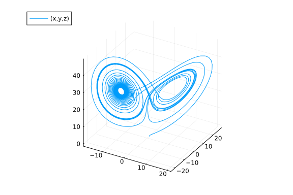
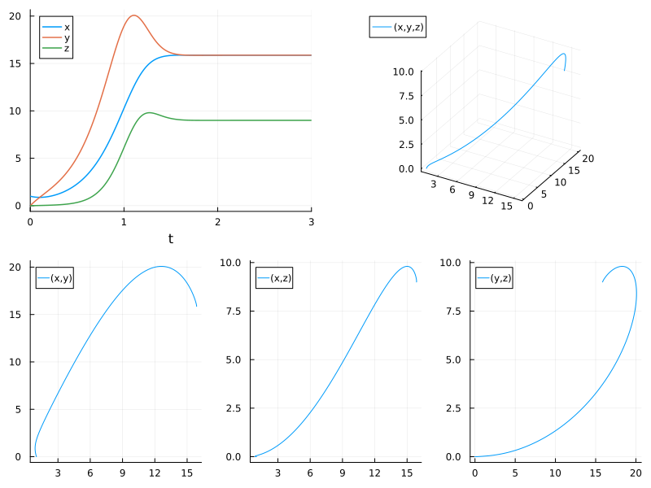
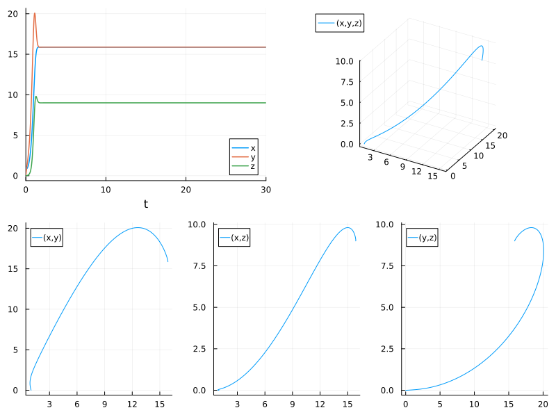

Lorenz Parameter Estimation Benchmarks
Estimate the parameters of the Lorenz system from the dataset
Note: If data is generated with a fixed time step method and then is tested against with the same time step, there is a biased introduced since it's no longer about hitting the true solution, rather it's just about retreiving the same values that the ODE was first generated by! Thus this version uses adaptive timestepping for all portions so that way tests are against the true solution.
using ParameterizedFunctions, OrdinaryDiffEq, DiffEqParamEstim, Optimization
using OptimizationBBO, OptimizationNLopt, Plots, ForwardDiff, BenchmarkTools
gr(fmt=:png)Plots.GRBackend()Xiang2015Bounds = Tuple{Float64, Float64}[(9, 11), (20, 30), (2, 3)] # for local optimizations
xlow_bounds = [9.0,20.0,2.0]
xhigh_bounds = [11.0,30.0,3.0]
LooserBounds = Tuple{Float64, Float64}[(0, 22), (0, 60), (0, 6)] # for global optimization
GloIniPar = [0.0, 0.5, 0.1] # for global optimizations
LocIniPar = [9.0, 20.0, 2.0] # for local optimization3-element Vector{Float64}:
9.0
20.0
2.0g1 = @ode_def LorenzExample begin
dx = σ*(y-x)
dy = x*(ρ-z) - y
dz = x*y - β*z
end σ ρ β
p = [10.0,28.0,2.66] # Parameters used to construct the dataset
r0 = [1.0; 0.0; 0.0] #[-11.8,-5.1,37.5] PODES Initial values of the system in space # [0.1, 0.0, 0.0]
tspan = (0.0, 30.0) # PODES sample of 3000 observations over the (0,30) timespan
prob = ODEProblem(g1, r0, tspan,p)
tspan2 = (0.0, 3.0) # Xiang test sample of 300 observations with a timestep of 0.01
prob_short = ODEProblem(g1, r0, tspan2,p)ODEProblem with uType Vector{Float64} and tType Float64. In-place: true
timespan: (0.0, 3.0)
u0: 3-element Vector{Float64}:
1.0
0.0
0.0dt = 30.0/3000
tf = 30.0
tinterval = 0:dt:tf
t = collect(tinterval)3001-element Vector{Float64}:
0.0
0.01
0.02
0.03
0.04
0.05
0.06
0.07
0.08
0.09
⋮
29.92
29.93
29.94
29.95
29.96
29.97
29.98
29.99
30.0h = 0.01
M = 300
tstart = 0.0
tstop = tstart + M * h
tinterval_short = 0:h:tstop
t_short = collect(tinterval_short)301-element Vector{Float64}:
0.0
0.01
0.02
0.03
0.04
0.05
0.06
0.07
0.08
0.09
⋮
2.92
2.93
2.94
2.95
2.96
2.97
2.98
2.99
3.0# Generate Data
data_sol_short = solve(prob_short,Vern9(),saveat=t_short,reltol=1e-9,abstol=1e-9)
data_short = convert(Array, data_sol_short) # This operation produces column major dataset obs as columns, equations as rows
data_sol = solve(prob,Vern9(),saveat=t,reltol=1e-9,abstol=1e-9)
data = convert(Array, data_sol)3×3001 Matrix{Float64}:
1.0 0.917924 0.867919 0.84536 … 13.8987 13.2896 12.5913
0.0 0.26634 0.51174 0.744654 8.31875 6.7199 5.22868
0.0 0.00126393 0.00465567 0.00983655 39.19 39.1699 38.904Plot the data
plot(data_sol_short,vars=(1,2,3)) # the short solution
plot(data_sol,vars=(1,2,3)) # the longer solution
interpolation_sol = solve(prob,Vern7(),saveat=t,reltol=1e-12,abstol=1e-12)
plot(interpolation_sol,vars=(1,2,3))
xyzt = plot(data_sol_short, plotdensity=10000,lw=1.5)
xy = plot(data_sol_short, plotdensity=10000, vars=(1,2))
xz = plot(data_sol_short, plotdensity=10000, vars=(1,3))
yz = plot(data_sol_short, plotdensity=10000, vars=(2,3))
xyz = plot(data_sol_short, plotdensity=10000, vars=(1,2,3))
plot(plot(xyzt,xyz),plot(xy, xz, yz, layout=(1,3),w=1), layout=(2,1), size=(800,600))
xyzt = plot(data_sol, plotdensity=10000,lw=1.5)
xy = plot(data_sol, plotdensity=10000, vars=(1,2))
xz = plot(data_sol, plotdensity=10000, vars=(1,3))
yz = plot(data_sol, plotdensity=10000, vars=(2,3))
xyz = plot(data_sol, plotdensity=10000, vars=(1,2,3))
plot(plot(xyzt,xyz),plot(xy, xz, yz, layout=(1,3),w=1), layout=(2,1), size=(800,600))
Find a local solution for the three parameters from a short data set
obj_short = build_loss_objective(prob_short,Tsit5(),L2Loss(t_short,data_short),tstops=t_short)
optprob = OptimizationProblem(obj_short, LocIniPar, lb = xlow_bounds, ub = xhigh_bounds)
@btime res1 = solve(optprob, BBO_adaptive_de_rand_1_bin(), maxiters = 7e3)
# Tolernace is still too high to get close enough1.025 s (2759128 allocations: 389.96 MiB)
u: 3-element Vector{Float64}:
9.99999954751715
28.000000171672124
2.6599999457865957obj_short = build_loss_objective(prob_short,Tsit5(),L2Loss(t_short,data_short),tstops=t_short,reltol=1e-9)
optprob = OptimizationProblem(obj_short, LocIniPar, lb = xlow_bounds, ub = xhigh_bounds)
@btime res1 = solve(optprob, BBO_adaptive_de_rand_1_bin(), maxiters = 7e3)
# With the tolerance lower, it achieves the correct solution in 3.5 seconds.1.492 s (2755372 allocations: 389.40 MiB)
u: 3-element Vector{Float64}:
9.999999894807077
27.999999996036127
2.6599999873715214obj_short = build_loss_objective(prob_short,Vern9(),L2Loss(t_short,data_short),tstops=t_short,reltol=1e-9,abstol=1e-9)
optprob = OptimizationProblem(obj_short, LocIniPar, lb = xlow_bounds, ub = xhigh_bounds)
@btime res1 = solve(optprob, BBO_adaptive_de_rand_1_bin(), maxiters = 7e3)
# With the more accurate solver Vern9 in the solution of the ODE, the convergence is less efficient!
# Fastest BlackBoxOptim: 3.5 seconds1.291 s (2790354 allocations: 397.23 MiB)
u: 3-element Vector{Float64}:
9.999999933634127
28.00000003714929
2.660000001767304Using NLopt
First, the global optimization algorithms
obj_short = build_loss_objective(prob_short,Vern9(),L2Loss(t_short,data_short),Optimization.AutoForwardDiff(),tstops=t_short,reltol=1e-9,abstol=1e-9)(::SciMLBase.OptimizationFunction{true, ADTypes.AutoForwardDiff{nothing, No
thing}, DiffEqParamEstim.var"#29#30"{Nothing, typeof(DiffEqParamEstim.STAND
ARD_PROB_GENERATOR), Base.Pairs{Symbol, Any, Tuple{Symbol, Symbol, Symbol},
NamedTuple{(:tstops, :reltol, :abstol), Tuple{Vector{Float64}, Float64, Fl
oat64}}}, SciMLBase.ODEProblem{Vector{Float64}, Tuple{Float64, Float64}, tr
ue, Vector{Float64}, Main.var"##WeaveSandBox#7969".LorenzExample{Main.var"#
#WeaveSandBox#7969".var"###ParameterizedDiffEqFunction#7971", Main.var"##We
aveSandBox#7969".var"###ParameterizedTGradFunction#7972", Main.var"##WeaveS
andBox#7969".var"###ParameterizedJacobianFunction#7973", Nothing, Nothing,
ModelingToolkit.ODESystem}, Base.Pairs{Symbol, Union{}, Tuple{}, NamedTuple
{(), Tuple{}}}, SciMLBase.StandardODEProblem}, OrdinaryDiffEq.Vern9{typeof(
OrdinaryDiffEq.trivial_limiter!), typeof(OrdinaryDiffEq.trivial_limiter!),
Static.False}, DiffEqParamEstim.L2Loss{Vector{Float64}, Matrix{Float64}, No
thing, Nothing, Nothing}, Nothing, Tuple{}}, Nothing, Nothing, Nothing, Not
hing, Nothing, Nothing, Nothing, Nothing, Nothing, Nothing, Nothing, Nothin
g, Nothing, typeof(SciMLBase.DEFAULT_OBSERVED_NO_TIME), Nothing, Nothing, N
othing, Nothing, Nothing, Nothing, Nothing}) (generic function with 1 metho
d)opt = Opt(:GN_ORIG_DIRECT_L, 3)
optprob = OptimizationProblem(obj_short, GloIniPar, lb = first.(LooserBounds), ub = last.(LooserBounds))
@btime res1 = solve(optprob, opt, maxiters = 10000, xtol_rel = 1e-12)678.977 ms (1428847 allocations: 234.06 MiB)
u: 3-element Vector{Float64}:
10.000000000174282
28.000000000007077
2.6600000000125332opt = Opt(:GN_CRS2_LM, 3)
@btime res1 = solve(optprob, opt, maxiters = 10000, xtol_rel = 1e-12)535.197 ms (1120200 allocations: 183.51 MiB)
u: 3-element Vector{Float64}:
10.000000000014179
28.000000000014225
2.6600000000057187opt = Opt(:GN_ISRES, 3)
@btime res1 = solve(optprob, opt, maxiters = 10000, xtol_rel = 1e-12) # Accurate to single precision 8.2 seconds1.767 s (3670116 allocations: 601.12 MiB)
u: 3-element Vector{Float64}:
9.998286707885246
28.000416367559676
2.6599117935061978opt = Opt(:GN_ESCH, 3)
@btime res1 = solve(optprob, opt, maxiters = 10000, xtol_rel = 1e-12) # Approximately accurate, good starting values for local optimization1.747 s (3670116 allocations: 601.12 MiB)
u: 3-element Vector{Float64}:
10.146034349332337
27.585683945909654
2.6927236916743196Next, the local optimization algorithms that could be used after the global algorithms as a check on the solution and its precision. All the local optimizers are started from LocIniPar and with the narrow bounds of the Xiang2015Paper.
opt = Opt(:LN_BOBYQA, 3)
optprob = OptimizationProblem(obj_short, LocIniPar, lb = xlow_bounds, ub = xhigh_bounds)
@btime res1 = solve(optprob, opt, maxiters = 10000, xtol_rel = 1e-12)18.214 ms (40486 allocations: 6.68 MiB)
u: 3-element Vector{Float64}:
10.000000000050505
28.000000000023256
2.6600000000078743opt = Opt(:LN_NELDERMEAD, 3)
@btime res1 = solve(optprob, opt, maxiters = 10000, xtol_rel = 1e-12)51.603 ms (115721 allocations: 19.00 MiB)
u: 3-element Vector{Float64}:
10.00000000005633
28.00000000003226
2.660000000009111opt = Opt(:LD_SLSQP, 3)
@btime res1 = solve(optprob, opt, maxiters = 10000, xtol_rel = 1e-12)12.110 ms (46215 allocations: 3.97 MiB)
u: 3-element Vector{Float64}:
10.000000000051957
28.000000000022848
2.660000000007989opt = Opt(:LN_COBYLA, 3)
@btime res1 = solve(optprob, opt, maxiters = 10000, xtol_rel = 1e-12)385.988 ms (803479 allocations: 131.64 MiB)
u: 3-element Vector{Float64}:
10.000000000035833
28.00000000002392
2.6600000000068387opt = Opt(:LN_NEWUOA_BOUND, 3)
@btime res1 = solve(optprob, opt, maxiters = 10000, xtol_rel = 1e-12)60.240 ms (68378 allocations: 11.25 MiB)
u: 3-element Vector{Float64}:
10.000001737489647
28.000001355370276
2.6599999734839916opt = Opt(:LN_PRAXIS, 3)
@btime res1 = solve(optprob, opt, maxiters = 10000, xtol_rel = 1e-12)12.914 ms (30442 allocations: 5.22 MiB)
u: 3-element Vector{Float64}:
10.911254291490199
22.250436488989983
2.126977707794685opt = Opt(:LN_SBPLX, 3)
@btime res1 = solve(optprob, opt, maxiters = 10000, xtol_rel = 1e-12)131.259 ms (274632 allocations: 45.03 MiB)
u: 3-element Vector{Float64}:
10.000000000058924
28.000000000020663
2.660000000008665opt = Opt(:LD_MMA, 3)
@btime res1 = solve(optprob, opt, maxiters = 10000, xtol_rel = 1e-12)60.426 ms (237532 allocations: 19.36 MiB)
u: 3-element Vector{Float64}:
9.999999999995449
28.00000000005174
2.659999999994011opt = Opt(:LD_LBFGS, 3)
@btime res1 = solve(optprob, opt, maxiters = 10000, xtol_rel = 1e-12)9.268 ms (36332 allocations: 3.01 MiB)
u: 3-element Vector{Float64}:
10.000000000052934
28.000000000022638
2.660000000007903opt = Opt(:LD_TNEWTON_PRECOND_RESTART, 3)
@btime res1 = solve(optprob, opt, maxiters = 10000, xtol_rel = 1e-12)11.812 ms (46392 allocations: 3.83 MiB)
u: 3-element Vector{Float64}:
10.000000000051458
28.00000000002282
2.6600000000079564Now let's solve the longer version for a global solution
Notice from the plotting above that this ODE problem is chaotic and tends to diverge over time. In the longer version of parameter estimation, the dataset is increased to 3000 observations per variable with the same integration time step of 0.01. Vern9 solver with reltol=1e-9 and abstol=1e-9 has been established to be accurate on the time interval [0,50]
# BB with Vern9 converges very slowly. The final values are within the NarrowBounds.
obj = build_loss_objective(prob,Vern9(),L2Loss(t,data),tstops=t,reltol=1e-9,abstol=1e-9)
optprob = OptimizationProblem(obj, GloIniPar, lb = first.(LooserBounds), ub = last.(LooserBounds))
@btime res1 = solve(optprob, BBO_adaptive_de_rand_1_bin(); maxiters = 4e3) # Default adaptive_de_rand_1_bin_radiuslimited 33 sec [10.2183, 24.6711, 2.28969]
#@btime res1 = bboptimize(obj;SearchRange = LooserBounds, Method = :adaptive_de_rand_1_bin, MaxSteps = 4e3) # Method 32 sec [13.2222, 25.8589, 2.56176]
#@btime res1 = bboptimize(obj;SearchRange = LooserBounds, Method = :dxnes, MaxSteps = 2e3) # Method dxnes 119 sec [16.8648, 24.393, 2.29119]
#@btime res1 = bboptimize(obj;SearchRange = LooserBounds, Method = :xnes, MaxSteps = 2e3) # Method xnes 304 sec [19.1647, 24.9479, 2.39467]
#@btime res1 = bboptimize(obj;SearchRange = LooserBounds, Method = :de_rand_1_bin_radiuslimited, MaxSteps = 2e3) # Method 44 sec [13.805, 24.6054, 2.37274]
#@btime res1 = bboptimize(obj;SearchRange = LooserBounds, Method = :generating_set_search, MaxSteps = 2e3) # Method 195 sec [19.1847, 24.9492, 2.39412]7.095 s (12711871 allocations: 1.66 GiB)
u: 3-element Vector{Float64}:
6.869235421008504
25.62510867029442
2.0748398457251005# using Evolutionary
# N = 3
# @time result, fitness, cnt = cmaes(obj, N; μ = 3, λ = 12, iterations = 1000) # cmaes( rastrigin, N; μ = 15, λ = P, tol = 1e-8)opt = Opt(:GN_ORIG_DIRECT_L, 3)
@btime res1 = solve(optprob, opt, maxiters = 10000, xtol_rel = 1e-12)3.667 s (6562816 allocations: 876.52 MiB)
u: 3-element Vector{Float64}:
7.04665993025209
23.666102233396032
1.8066012972265462opt = Opt(:GN_CRS2_LM, 3)
@btime res1 = solve(optprob, opt, maxiters = 20000, xtol_rel = 1e-12) # Hit and miss. converge approximately accurate values for local opt.91 seconds34.353 s (61420089 allocations: 8.01 GiB)
u: 3-element Vector{Float64}:
19.1611506503221
24.94719803345662
2.394785718474526opt = Opt(:GN_ISRES, 3)
@btime res1 = solve(optprob, opt, maxiters = 50000, xtol_rel = 1e-12) # Approximately accurate within local bounds86.130 s (153550089 allocations: 20.03 GiB)
u: 3-element Vector{Float64}:
10.20461116751004
27.197944716837608
2.462046668429562opt = Opt(:GN_ESCH, 3)
@btime res1 = solve(optprob, opt, maxiters = 20000, xtol_rel = 1e-12) # Approximately accurate34.357 s (61420089 allocations: 8.01 GiB)
u: 3-element Vector{Float64}:
1.6759045116132338
25.38692820665557
0.7302519197965371This parameter estimation on the longer sample proves to be extremely challenging for the global optimizers. BlackBoxOptim is best in optimizing the objective function. All of the global algorithms produces final parameter estimates that could be used as starting values for further refinement with the local optimization algorithms.
opt = Opt(:LN_BOBYQA, 3)
optprob = OptimizationProblem(obj_short, LocIniPar, lb = xlow_bounds, ub = xhigh_bounds)
@btime res1 = solve(optprob, opt, maxiters = 10000, xtol_rel = 1e-12) # Claims SUCCESS but does not iterate to the true values.18.259 ms (40486 allocations: 6.68 MiB)
u: 3-element Vector{Float64}:
10.000000000050505
28.000000000023256
2.6600000000078743opt = Opt(:LN_NELDERMEAD, 3)
@btime res1 = solve(optprob, opt, maxiters = 10000, xtol_rel = 1e-12) # Inaccurate final values51.871 ms (115721 allocations: 19.00 MiB)
u: 3-element Vector{Float64}:
10.00000000005633
28.00000000003226
2.660000000009111opt = Opt(:LD_SLSQP, 3)
@btime res1 = solve(optprob, opt, maxiters = 10000, xtol_rel = 1e-12) # Inaccurate final values12.097 ms (46215 allocations: 3.97 MiB)
u: 3-element Vector{Float64}:
10.000000000051957
28.000000000022848
2.660000000007989No local optimizer can improve the global solution to the true values.
minimum(root)Error: UndefVarError: `root` not definedConclusion:
As expected the Lorenz system is extremely sensitive to initial space values. Starting the integration from
r0 = [0.1,0.0,0.0]produces convergence with the short sample of 300 observations. This can be achieved by all the global optimizers as well as most of the local optimizers. Instead starting fromr0= [-11.8,-5.1,37.5], as in PODES, with the shorter sample shrinks the number of successful algorithms to 3:BBO,:GN_CRS2_LMand:LD_SLSQP. For the longer sample, all the algorithms fail.When trying to hit the real data, having a low enough tolerance on the numerical solution is key. If the numerical solution is too rough, then we can never actually hone in on the true parameters since even with the true parameters we will erroneously induce numerical error. Maybe this could be adaptive?
Excessively low tolerance in the numerical solution is inefficient and delays the convergence of the estimation.
The estimation method and the global versus local optimization make a huge difference in the timings. Here, BBO always find the correct solution for a global optimization setup. For local optimization, most methods in NLopt, like :LN_BOBYQA, solve the problem in <0.05 seconds. This is an algorithm that can scale a local optimization but we are aiming to scale a global optimization.
QuadDIRECT performs very well on the shorter problem but doesn't give very great results for the longer in the Lorenz case, more can be read about the algorithm here.
Fitting shorter timespans is easier... maybe this can lead to determining a minimal sample size for the optimizers and the estimator to succeed.
Appendix
These benchmarks are a part of the SciMLBenchmarks.jl repository, found at: https://github.com/SciML/SciMLBenchmarks.jl. For more information on high-performance scientific machine learning, check out the SciML Open Source Software Organization https://sciml.ai.
To locally run this benchmark, do the following commands:
using SciMLBenchmarks
SciMLBenchmarks.weave_file("benchmarks/ParameterEstimation","LorenzParameterEstimation.jmd")Computer Information:
Julia Version 1.9.3
Commit bed2cd540a1 (2023-08-24 14:43 UTC)
Build Info:
Official https://julialang.org/ release
Platform Info:
OS: Linux (x86_64-linux-gnu)
CPU: 128 × AMD EPYC 7502 32-Core Processor
WORD_SIZE: 64
LIBM: libopenlibm
LLVM: libLLVM-14.0.6 (ORCJIT, znver2)
Threads: 128 on 128 virtual cores
Environment:
JULIA_CPU_THREADS = 128
JULIA_DEPOT_PATH = /cache/julia-buildkite-plugin/depots/5b300254-1738-4989-ae0a-f4d2d937f953
Package Information:
Status `/cache/build/exclusive-amdci3-0/julialang/scimlbenchmarks-dot-jl/benchmarks/ParameterEstimation/Project.toml`
[6e4b80f9] BenchmarkTools v1.3.2
[a134a8b2] BlackBoxOptim v0.6.2
[1130ab10] DiffEqParamEstim v2.0.1
[31c24e10] Distributions v0.25.100
[f6369f11] ForwardDiff v0.10.36
⌅ [76087f3c] NLopt v0.6.5
[7f7a1694] Optimization v3.16.0
[3e6eede4] OptimizationBBO v0.1.5
[4e6fcdb7] OptimizationNLopt v0.1.8
[1dea7af3] OrdinaryDiffEq v6.55.0
[65888b18] ParameterizedFunctions v5.15.0
[91a5bcdd] Plots v1.39.0
[731186ca] RecursiveArrayTools v2.38.7
[31c91b34] SciMLBenchmarks v0.1.3
Info Packages marked with ⌅ have new versions available but compatibility constraints restrict them from upgrading. To see why use `status --outdated`
Warning The project dependencies or compat requirements have changed since the manifest was last resolved. It is recommended to `Pkg.resolve()` or consider `Pkg.update()` if necessary.And the full manifest:
Status `/cache/build/exclusive-amdci3-0/julialang/scimlbenchmarks-dot-jl/benchmarks/ParameterEstimation/Manifest.toml`
[47edcb42] ADTypes v0.2.1
[c3fe647b] AbstractAlgebra v0.31.1
[1520ce14] AbstractTrees v0.4.4
[79e6a3ab] Adapt v3.6.2
[ec485272] ArnoldiMethod v0.2.0
[4fba245c] ArrayInterface v7.4.11
[30b0a656] ArrayInterfaceCore v0.1.29
[6e4b80f9] BenchmarkTools v1.3.2
[e2ed5e7c] Bijections v0.1.4
[d1d4a3ce] BitFlags v0.1.7
[62783981] BitTwiddlingConvenienceFunctions v0.1.5
[a134a8b2] BlackBoxOptim v0.6.2
[2a0fbf3d] CPUSummary v0.2.3
[a9c8d775] CPUTime v1.0.0
[00ebfdb7] CSTParser v3.3.6
[49dc2e85] Calculus v0.5.1
[d360d2e6] ChainRulesCore v1.16.0
[fb6a15b2] CloseOpenIntervals v0.1.12
⌅ [523fee87] CodecBzip2 v0.7.2
[944b1d66] CodecZlib v0.7.2
[35d6a980] ColorSchemes v3.23.0
[3da002f7] ColorTypes v0.11.4
[c3611d14] ColorVectorSpace v0.10.0
[5ae59095] Colors v0.12.10
[861a8166] Combinatorics v1.0.2
[a80b9123] CommonMark v0.8.12
[38540f10] CommonSolve v0.2.4
[bbf7d656] CommonSubexpressions v0.3.0
[34da2185] Compat v4.9.0
[b152e2b5] CompositeTypes v0.1.3
[f0e56b4a] ConcurrentUtilities v2.2.1
[8f4d0f93] Conda v1.9.1
[88cd18e8] ConsoleProgressMonitor v0.1.2
[187b0558] ConstructionBase v1.5.3
[d38c429a] Contour v0.6.2
[adafc99b] CpuId v0.3.1
[a8cc5b0e] Crayons v4.1.1
[9a962f9c] DataAPI v1.15.0
[864edb3b] DataStructures v0.18.15
[e2d170a0] DataValueInterfaces v1.0.0
[8bb1440f] DelimitedFiles v1.9.1
[39dd38d3] Dierckx v0.5.3
[2b5f629d] DiffEqBase v6.128.2
[459566f4] DiffEqCallbacks v2.29.1
[1130ab10] DiffEqParamEstim v2.0.1
[163ba53b] DiffResults v1.1.0
[b552c78f] DiffRules v1.15.1
[b4f34e82] Distances v0.10.9
[31c24e10] Distributions v0.25.100
[ffbed154] DocStringExtensions v0.9.3
[5b8099bc] DomainSets v0.6.7
[fa6b7ba4] DualNumbers v0.6.8
[7c1d4256] DynamicPolynomials v0.5.2
[4e289a0a] EnumX v1.0.4
[460bff9d] ExceptionUnwrapping v0.1.9
[d4d017d3] ExponentialUtilities v1.24.0
[e2ba6199] ExprTools v0.1.10
[c87230d0] FFMPEG v0.4.1
[7034ab61] FastBroadcast v0.2.6
[9aa1b823] FastClosures v0.3.2
[29a986be] FastLapackInterface v2.0.0
[1a297f60] FillArrays v1.6.1
[6a86dc24] FiniteDiff v2.21.1
[53c48c17] FixedPointNumbers v0.8.4
[59287772] Formatting v0.4.2
[f6369f11] ForwardDiff v0.10.36
[069b7b12] FunctionWrappers v1.1.3
[77dc65aa] FunctionWrappersWrappers v0.1.3
[46192b85] GPUArraysCore v0.1.5
[28b8d3ca] GR v0.72.9
[c145ed77] GenericSchur v0.5.3
[d7ba0133] Git v1.3.0
[c27321d9] Glob v1.3.1
[86223c79] Graphs v1.8.0
[42e2da0e] Grisu v1.0.2
[0b43b601] Groebner v0.4.2
[d5909c97] GroupsCore v0.4.0
[cd3eb016] HTTP v1.9.14
[eafb193a] Highlights v0.5.2
[3e5b6fbb] HostCPUFeatures v0.1.16
[34004b35] HypergeometricFunctions v0.3.23
[7073ff75] IJulia v1.24.2
[615f187c] IfElse v0.1.1
[d25df0c9] Inflate v0.1.3
[18e54dd8] IntegerMathUtils v0.1.2
[8197267c] IntervalSets v0.7.7
[92d709cd] IrrationalConstants v0.2.2
[82899510] IteratorInterfaceExtensions v1.0.0
[1019f520] JLFzf v0.1.5
[692b3bcd] JLLWrappers v1.5.0
[682c06a0] JSON v0.21.4
[98e50ef6] JuliaFormatter v1.0.35
[ccbc3e58] JumpProcesses v9.7.3
[ef3ab10e] KLU v0.4.0
[ba0b0d4f] Krylov v0.9.4
[b964fa9f] LaTeXStrings v1.3.0
[2ee39098] LabelledArrays v1.14.0
[984bce1d] LambertW v0.4.6
⌅ [23fbe1c1] Latexify v0.15.21
[10f19ff3] LayoutPointers v0.1.14
[50d2b5c4] Lazy v0.15.1
[1d6d02ad] LeftChildRightSiblingTrees v0.2.0
[d3d80556] LineSearches v7.2.0
[7ed4a6bd] LinearSolve v2.5.1
[2ab3a3ac] LogExpFunctions v0.3.26
[e6f89c97] LoggingExtras v1.0.2
[bdcacae8] LoopVectorization v0.12.165
[d8e11817] MLStyle v0.4.17
[1914dd2f] MacroTools v0.5.11
[d125e4d3] ManualMemory v0.1.8
[b8f27783] MathOptInterface v1.19.0
[fdba3010] MathProgBase v0.7.8
[739be429] MbedTLS v1.1.7
[442fdcdd] Measures v0.3.2
[e1d29d7a] Missings v1.1.0
[961ee093] ModelingToolkit v8.66.0
[46d2c3a1] MuladdMacro v0.2.4
[102ac46a] MultivariatePolynomials v0.5.1
[ffc61752] Mustache v1.0.17
[d8a4904e] MutableArithmetics v1.3.1
[d41bc354] NLSolversBase v7.8.3
⌅ [76087f3c] NLopt v0.6.5
[2774e3e8] NLsolve v4.5.1
[77ba4419] NaNMath v1.0.2
[8913a72c] NonlinearSolve v1.10.0
[6fe1bfb0] OffsetArrays v1.12.10
[4d8831e6] OpenSSL v1.4.1
[7f7a1694] Optimization v3.16.0
[3e6eede4] OptimizationBBO v0.1.5
[4e6fcdb7] OptimizationNLopt v0.1.8
[bac558e1] OrderedCollections v1.6.2
[1dea7af3] OrdinaryDiffEq v6.55.0
[90014a1f] PDMats v0.11.17
[65ce6f38] PackageExtensionCompat v1.0.1
[65888b18] ParameterizedFunctions v5.15.0
[d96e819e] Parameters v0.12.3
[69de0a69] Parsers v2.7.2
[06bb1623] PenaltyFunctions v0.3.0
[b98c9c47] Pipe v1.3.0
[ccf2f8ad] PlotThemes v3.1.0
[995b91a9] PlotUtils v1.3.5
[91a5bcdd] Plots v1.39.0
[e409e4f3] PoissonRandom v0.4.4
[f517fe37] Polyester v0.7.5
[1d0040c9] PolyesterWeave v0.2.1
[d236fae5] PreallocationTools v0.4.12
[aea7be01] PrecompileTools v1.2.0
[21216c6a] Preferences v1.4.0
[27ebfcd6] Primes v0.5.4
[33c8b6b6] ProgressLogging v0.1.4
[92933f4c] ProgressMeter v1.8.0
[1fd47b50] QuadGK v2.8.2
[fb686558] RandomExtensions v0.4.3
[e6cf234a] RandomNumbers v1.5.3
[3cdcf5f2] RecipesBase v1.3.4
[01d81517] RecipesPipeline v0.6.12
[731186ca] RecursiveArrayTools v2.38.7
[f2c3362d] RecursiveFactorization v0.2.20
[189a3867] Reexport v1.2.2
[05181044] RelocatableFolders v1.0.0
[ae029012] Requires v1.3.0
[79098fc4] Rmath v0.7.1
[7e49a35a] RuntimeGeneratedFunctions v0.5.12
[fdea26ae] SIMD v3.4.5
[94e857df] SIMDTypes v0.1.0
[476501e8] SLEEFPirates v0.6.39
[0bca4576] SciMLBase v1.95.0
[31c91b34] SciMLBenchmarks v0.1.3
[e9a6253c] SciMLNLSolve v0.1.8
[c0aeaf25] SciMLOperators v0.3.6
[6c6a2e73] Scratch v1.2.0
[efcf1570] Setfield v1.1.1
[992d4aef] Showoff v1.0.3
[777ac1f9] SimpleBufferStream v1.1.0
[727e6d20] SimpleNonlinearSolve v0.1.19
[699a6c99] SimpleTraits v0.9.4
[ce78b400] SimpleUnPack v1.1.0
[66db9d55] SnoopPrecompile v1.0.3
[b85f4697] SoftGlobalScope v1.1.0
[a2af1166] SortingAlgorithms v1.1.1
[47a9eef4] SparseDiffTools v2.5.1
[e56a9233] Sparspak v0.3.9
[d4ead438] SpatialIndexing v0.1.5
[276daf66] SpecialFunctions v2.3.1
[aedffcd0] Static v0.8.8
[0d7ed370] StaticArrayInterface v1.4.1
[90137ffa] StaticArrays v1.6.2
[1e83bf80] StaticArraysCore v1.4.2
[82ae8749] StatsAPI v1.6.0
⌅ [2913bbd2] StatsBase v0.33.21
[4c63d2b9] StatsFuns v1.3.0
[7792a7ef] StrideArraysCore v0.4.17
[69024149] StringEncodings v0.3.7
[2efcf032] SymbolicIndexingInterface v0.2.2
⌃ [d1185830] SymbolicUtils v1.2.0
[0c5d862f] Symbolics v5.5.1
[3783bdb8] TableTraits v1.0.1
[bd369af6] Tables v1.10.1
[62fd8b95] TensorCore v0.1.1
[5d786b92] TerminalLoggers v0.1.7
[8290d209] ThreadingUtilities v0.5.2
[a759f4b9] TimerOutputs v0.5.23
[0796e94c] Tokenize v0.5.25
[3bb67fe8] TranscodingStreams v0.9.13
[a2a6695c] TreeViews v0.3.0
[d5829a12] TriangularSolve v0.1.19
[410a4b4d] Tricks v0.1.7
[781d530d] TruncatedStacktraces v1.4.0
[5c2747f8] URIs v1.5.0
[3a884ed6] UnPack v1.0.2
[1cfade01] UnicodeFun v0.4.1
[1986cc42] Unitful v1.17.0
[45397f5d] UnitfulLatexify v1.6.3
[a7c27f48] Unityper v0.1.5
[41fe7b60] Unzip v0.2.0
[3d5dd08c] VectorizationBase v0.21.64
[81def892] VersionParsing v1.3.0
[19fa3120] VertexSafeGraphs v0.2.0
[44d3d7a6] Weave v0.10.12
[ddb6d928] YAML v0.4.9
[c2297ded] ZMQ v1.2.2
[700de1a5] ZygoteRules v0.2.3
[6e34b625] Bzip2_jll v1.0.8+0
[83423d85] Cairo_jll v1.16.1+1
[cd4c43a9] Dierckx_jll v0.1.0+0
[2e619515] Expat_jll v2.5.0+0
⌃ [b22a6f82] FFMPEG_jll v4.4.2+2
[a3f928ae] Fontconfig_jll v2.13.93+0
[d7e528f0] FreeType2_jll v2.13.1+0
[559328eb] FriBidi_jll v1.0.10+0
[0656b61e] GLFW_jll v3.3.8+0
[d2c73de3] GR_jll v0.72.9+1
[78b55507] Gettext_jll v0.21.0+0
[f8c6e375] Git_jll v2.36.1+2
[7746bdde] Glib_jll v2.74.0+2
[3b182d85] Graphite2_jll v1.3.14+0
[2e76f6c2] HarfBuzz_jll v2.8.1+1
[aacddb02] JpegTurbo_jll v2.1.91+0
[c1c5ebd0] LAME_jll v3.100.1+0
[88015f11] LERC_jll v3.0.0+1
[1d63c593] LLVMOpenMP_jll v15.0.4+0
[dd4b983a] LZO_jll v2.10.1+0
⌅ [e9f186c6] Libffi_jll v3.2.2+1
[d4300ac3] Libgcrypt_jll v1.8.7+0
[7e76a0d4] Libglvnd_jll v1.6.0+0
[7add5ba3] Libgpg_error_jll v1.42.0+0
[94ce4f54] Libiconv_jll v1.17.0+0
[4b2f31a3] Libmount_jll v2.35.0+0
[89763e89] Libtiff_jll v4.5.1+1
[38a345b3] Libuuid_jll v2.36.0+0
[079eb43e] NLopt_jll v2.7.1+0
[e7412a2a] Ogg_jll v1.3.5+1
⌅ [458c3c95] OpenSSL_jll v1.1.22+0
[efe28fd5] OpenSpecFun_jll v0.5.5+0
[91d4177d] Opus_jll v1.3.2+0
[30392449] Pixman_jll v0.42.2+0
[c0090381] Qt6Base_jll v6.4.2+3
[f50d1b31] Rmath_jll v0.4.0+0
[a2964d1f] Wayland_jll v1.21.0+0
[2381bf8a] Wayland_protocols_jll v1.25.0+0
[02c8fc9c] XML2_jll v2.10.4+0
[aed1982a] XSLT_jll v1.1.34+0
[ffd25f8a] XZ_jll v5.4.4+0
[4f6342f7] Xorg_libX11_jll v1.8.6+0
[0c0b7dd1] Xorg_libXau_jll v1.0.11+0
[935fb764] Xorg_libXcursor_jll v1.2.0+4
[a3789734] Xorg_libXdmcp_jll v1.1.4+0
[1082639a] Xorg_libXext_jll v1.3.4+4
[d091e8ba] Xorg_libXfixes_jll v5.0.3+4
[a51aa0fd] Xorg_libXi_jll v1.7.10+4
[d1454406] Xorg_libXinerama_jll v1.1.4+4
[ec84b674] Xorg_libXrandr_jll v1.5.2+4
[ea2f1a96] Xorg_libXrender_jll v0.9.10+4
[14d82f49] Xorg_libpthread_stubs_jll v0.1.1+0
[c7cfdc94] Xorg_libxcb_jll v1.15.0+0
[cc61e674] Xorg_libxkbfile_jll v1.1.2+0
[12413925] Xorg_xcb_util_image_jll v0.4.0+1
[2def613f] Xorg_xcb_util_jll v0.4.0+1
[975044d2] Xorg_xcb_util_keysyms_jll v0.4.0+1
[0d47668e] Xorg_xcb_util_renderutil_jll v0.3.9+1
[c22f9ab0] Xorg_xcb_util_wm_jll v0.4.1+1
[35661453] Xorg_xkbcomp_jll v1.4.6+0
[33bec58e] Xorg_xkeyboard_config_jll v2.39.0+0
[c5fb5394] Xorg_xtrans_jll v1.5.0+0
[8f1865be] ZeroMQ_jll v4.3.4+0
[3161d3a3] Zstd_jll v1.5.5+0
⌅ [214eeab7] fzf_jll v0.29.0+0
[a4ae2306] libaom_jll v3.4.0+0
[0ac62f75] libass_jll v0.15.1+0
[f638f0a6] libfdk_aac_jll v2.0.2+0
[b53b4c65] libpng_jll v1.6.38+0
[a9144af2] libsodium_jll v1.0.20+0
[f27f6e37] libvorbis_jll v1.3.7+1
[1270edf5] x264_jll v2021.5.5+0
[dfaa095f] x265_jll v3.5.0+0
[d8fb68d0] xkbcommon_jll v1.4.1+0
[0dad84c5] ArgTools v1.1.1
[56f22d72] Artifacts
[2a0f44e3] Base64
[ade2ca70] Dates
[8ba89e20] Distributed
[f43a241f] Downloads v1.6.0
[7b1f6079] FileWatching
[9fa8497b] Future
[b77e0a4c] InteractiveUtils
[b27032c2] LibCURL v0.6.3
[76f85450] LibGit2
[8f399da3] Libdl
[37e2e46d] LinearAlgebra
[56ddb016] Logging
[d6f4376e] Markdown
[a63ad114] Mmap
[ca575930] NetworkOptions v1.2.0
[44cfe95a] Pkg v1.9.0
[de0858da] Printf
[9abbd945] Profile
[3fa0cd96] REPL
[9a3f8284] Random
[ea8e919c] SHA v0.7.0
[9e88b42a] Serialization
[1a1011a3] SharedArrays
[6462fe0b] Sockets
[2f01184e] SparseArrays
[10745b16] Statistics v1.9.0
[4607b0f0] SuiteSparse
[fa267f1f] TOML v1.0.3
[a4e569a6] Tar v1.10.0
[8dfed614] Test
[cf7118a7] UUIDs
[4ec0a83e] Unicode
[e66e0078] CompilerSupportLibraries_jll v1.0.2+0
[deac9b47] LibCURL_jll v7.84.0+0
[29816b5a] LibSSH2_jll v1.10.2+0
[c8ffd9c3] MbedTLS_jll v2.28.2+0
[14a3606d] MozillaCACerts_jll v2022.10.11
[4536629a] OpenBLAS_jll v0.3.21+4
[05823500] OpenLibm_jll v0.8.1+0
[efcefdf7] PCRE2_jll v10.42.0+0
[bea87d4a] SuiteSparse_jll v5.10.1+6
[83775a58] Zlib_jll v1.2.13+0
[8e850b90] libblastrampoline_jll v5.8.0+0
[8e850ede] nghttp2_jll v1.48.0+0
[3f19e933] p7zip_jll v17.4.0+0
Info Packages marked with ⌃ and ⌅ have new versions available, but those with ⌅ are restricted by compatibility constraints from upgrading. To see why use `status --outdated -m`
Warning The project dependencies or compat requirements have changed since the manifest was last resolved. It is recommended to `Pkg.resolve()` or consider `Pkg.update()` if necessary.